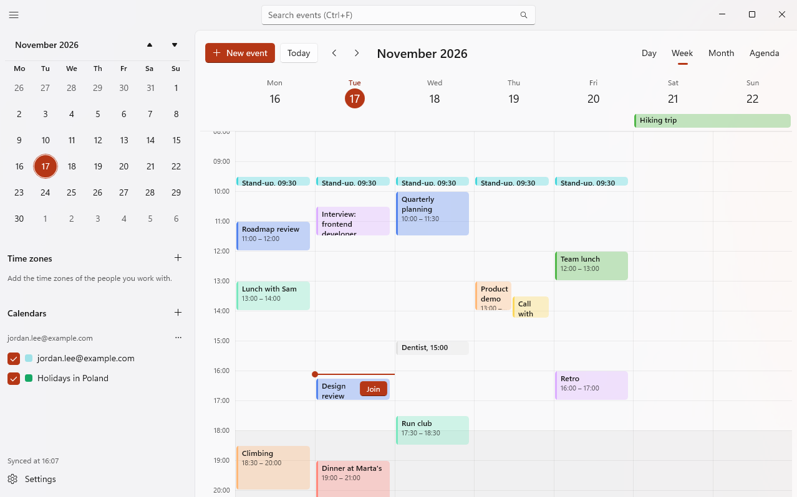
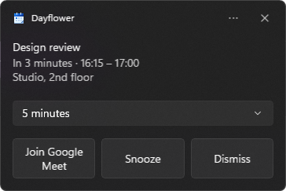
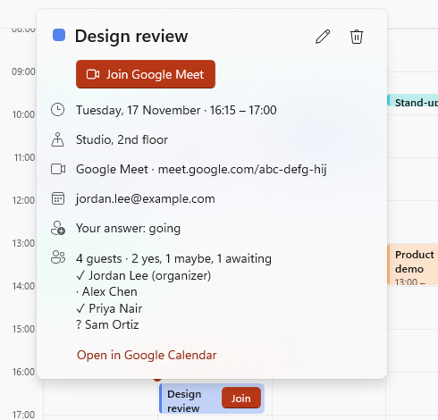
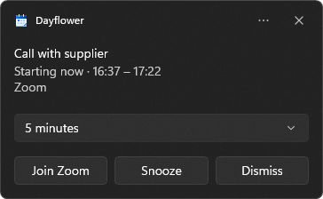

Dayflower
A simple calendar for Windows 11 that puts all your calendars in one place.
Free and open source (GPL-3.0) · Windows 11, x64 and ARM · In beta


What it does
Your events stay in your online calendar. Dayflower shows them, and makes the changes you ask for, from your PC.

Join a meeting in one click
Every event with a video link gets a Join button, in its details and on the event itself shortly before it starts. Dayflower recognises Google Meet, Zoom, Microsoft Teams, Webex, Slack huddles, Whereby, GoTo Meeting, Jitsi and Amazon Chime, and uses any other video link your calendar attaches.
The details also show the guests and their answers, and let you give yours.

The reminders you already set
The reminders you set in your calendar arrive as Windows notifications, at the same times. Snooze one for 1, 5, 10 or 15 minutes, or until the event starts. Meetings also get a "starting now" alert, and reminders can stay on screen until you deal with them.
Dayflower starts with Windows, hidden, so reminders arrive even when its window is closed.
Several accounts, one calendar
Personal and work accounts side by side, in day, week, month and agenda views. A meeting that's on two of your accounts shows once.
Editing
Create, change and delete events, repeating ones included. Drag to move or resize, add guests and see when they're free, add a video meeting link.
Search and invitations
Search all your accounts at once. A new invitation arrives as a notification with Accept, Maybe and Decline.
World clock
Keep the time zones of the people you work with in the side pane.
Part of Windows 11
Mica, light and dark mode, and your accent colour. It updates itself in the background.
Readable offline
Your calendar is saved on your PC, so you can look at it without a connection. Changes need one.
Keyboard shortcuts
| Ctrl + N | New event |
| Ctrl + F | Search |
| T | Today |
| D W M A | Day, week, month, agenda |
| Page Up Page Down | Previous and next |
| Ctrl + R or F5 | Sync now |
| Ctrl + , | Settings |
What it doesn't do yet
- Google accounts only, for now. Outlook and Microsoft 365, iCloud and other CalDAV calendars are planned.
- Windows 11 only.
- No editing while offline.
- No tasks, natural-language quick add, or year view.
- English only; a Polish translation is planned.
Installing
Three steps, no admin rights needed.
-
Download
From the releases page, get
Dayflower-win-x64-Setup.exe, orDayflower-win-arm64-Setup.exefor an ARM PC (Settings › System › About › System type). -
Run it
It installs for your Windows user only. The installer isn't code-signed yet, so Windows may say "Windows protected your PC": choose More info, then Run anyway. Where Smart App Control is on, Dayflower can't be installed until it's signed.
-
Add your account
Sign in to your account in your browser. A work or school account may need its admin to allow Dayflower first. While Google is still reviewing Dayflower, a Google sign-in says "Google hasn't verified this app": choose Advanced, then Go to Dayflower.
To uninstall, use Settings › Apps › Installed apps; that also removes Dayflower's saved events, settings and sign-ins. Something not working? Report a problem.
How Dayflower uses your Google data
When you add a Google account, Google asks you to allow these permissions. Dayflower uses each one only for what's described here, on your PC.
- See your calendars
calendar.calendarlist.readonly - Lists your calendars, with their names and colours, so you can choose which ones Dayflower shows.
- See and edit your events
calendar.events - Shows your events, Join links and reminders, and makes the changes you ask for: creating, changing and deleting events, replying to invitations, adding a Google Meet link.
- See when guests are free
calendar.events.freebusyOptional - When you plan a meeting, shows when the people you invite are busy, without showing their events.
- Your email address and name
openid, email, profile - Shows which Google account each calendar belongs to, and tells your accounts apart.
- No servers. Dayflower talks directly from your PC to Google. The developer never receives, stores or sees your data.
- Kept on your PC. Your calendar is cached on your PC so Dayflower works offline, and your Google sign-in is encrypted for your Windows account.
- No tracking. No analytics, telemetry or ads, and your data is never sold or shared.
- Yours to remove. Removing an account or uninstalling Dayflower deletes its data from your PC; you can withdraw its access at Google account permissions.
Dayflower's use and transfer of information received from Google APIs adheres to the Google API Services User Data Policy, including the Limited Use requirements. Read the full privacy policy.
Download Dayflower
Free and open source, for Windows 11 on x64 and ARM. It keeps itself up to date.